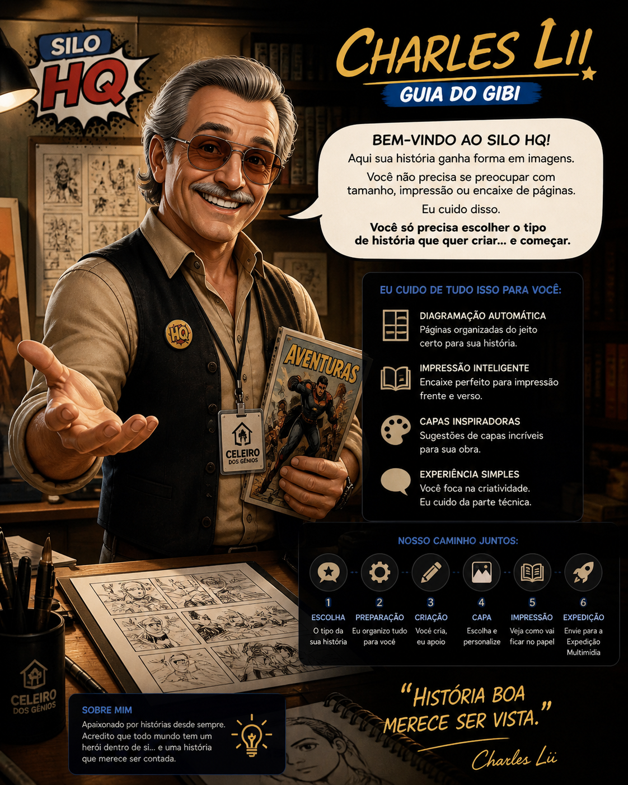

Silo HQ

Charles Lii — Guia do Gibi
Bem-vindo ao Silo HQ. Aqui sua história ganha forma em imagens. Você não precisa se preocupar com tamanho, impressão ou encaixe de páginas. Eu cuido disso. Você só escolhe o tipo de história, a letra, a capa e começa.
Charles Lii explica:Comece pelo Motor do Gibi. Depois escolha capa, fonte, veja a impressão dobrada e envie para a Expedição Multimídia.